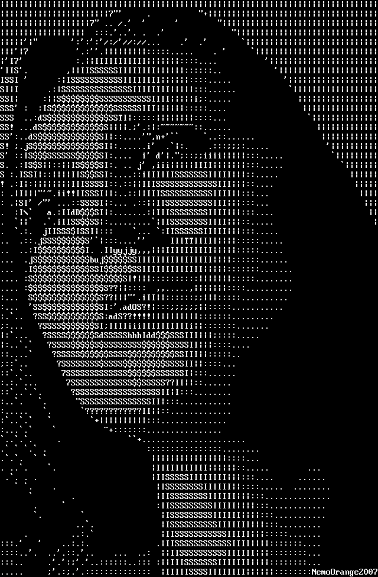

Running under the popular Ad Reinhardt quote: “Art is art. Everything else is everything else.” I seek to make a website whose various components are art in nature. Starting with the footer that represents escaping gas, I began with many ideas on how to stretch the capabilities of CSS in web art making.
Inspiration

One of the most fascinating milestones in internet and digital technology is the ASCII table. ASCII, abbreviation of American Standard Code for Information Interchange, is a standard data-transmission code that is used by smaller and less-powerful computers to represent both textual data (letters, numbers, and punctuation marks) and noninput-device commands (control characters).
Expanding on basic ASCII art like the endless horse by Colleen Josephson and Kyle Miller, this website will be a combination of Image based SCII -art, pseudo-Art and Command line Art. The art will be mainly substitutions of images with the characters available in the ASCII table. this will create a calligraphy collection, treating a collection of brushstrokes as typography.
Final thought
The final vision of the website is to allow the coexistence of artistic elements of the website, at the same time creating a nostalgic effect with art.
References
https://www.asciiart.eu/
https://en.m.wikipedia.org/wiki/File:ASCII-Table-wide.svg
https://www.artstation.com/artwork/Yak5gd